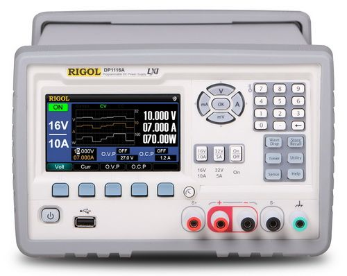

可编程线性直流电源

产品简介
□产品型号：DP1116A
□产品名称：可编程线性直流电源
□DP1116A是一款高性能的具有两档范围设置，带Remote Sense功能，功率达160W，单路输出的可编程线性直流电源
□它拥有清晰的用户界面，优异的性能指标，多种标准配置接口，可满足多样化的测试需求
功能特性
□4.3寸真彩色TFT大液晶屏，可同时清晰地显示多个参数和状态
□具有两个电压/电流输出范围的单路输出，带Remote Sense功能，总输出功率为160W
□低纹波噪声：输出噪声和纹波< 350 μVrms / 3 mVpp
□出色的电源调节率：< 0.01% + 2 mV（电压），< 0.01% + 250 μA（电流）
□出色的负载调节率：< 0.01% + 2 mV（电压），< 0.005% + 250 μA（电流）
□快速的瞬态响应时间：<50μs
□过压/过流保护功能，可以灵活设置过压和过流保护参数，对负载实现有效的保护
□二级过温保护功能
□存储和调用系统设置参数功能
□定时输出功能，支持最大100组定时设置，支持无限及指定循环次数输出
□波形显示功能：实时显示输出电压、电流和功率波形，配合数字显示的电压、电流和功率数值，仪器输出状态一目了然
□经典显示模式：直观表盘设计，经典指针界面重现，电压、电流、功率变化趋势一目了然
□全面的接口配置：USB Device、USB Host、LAN和GPIB（IEEE-488）
□支持U盘存储
□支持SCPI远程命令控制
□符合LXI-C类仪器标准（1.2版本）
□支持在线帮助功能
□支持中英文界面及中英文输入
应用行业
□ 设计和调试；
□ 教育和培训；
□ 制造测试和质量控制；
□ 服务和维修